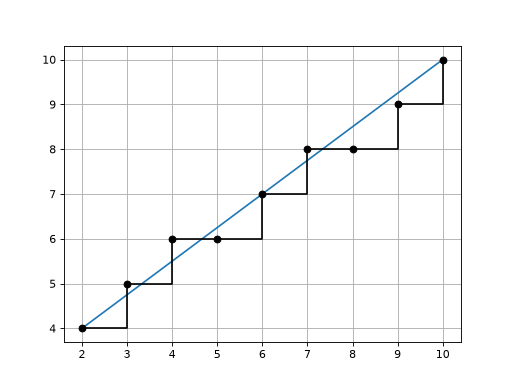
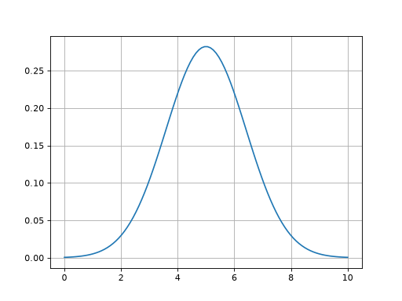
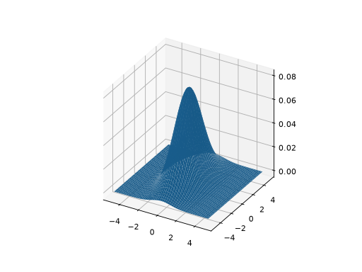

Numerical utility functions
- array2str(X, valuesep=', ', rowsep=' | ', fmt='{:.3g}', brackets=('[ ', ' ]'), suppress_small=True)[source]
Convert array to single line string
- Parameters:
X (
NDArray) – 1D or 2D array to convertvaluesep (
str) – separator between numbers, defaults to “, “rowsep (
str) – separator between rows, defaults to “ | “format – format string, defaults to “{:.3g}”
brackets (
Tuple[str,str]) – strings to be added to start and end of the string, defaults to (”[ “, “ ]”). Set to None to suppress brackets.suppress_small (
bool) – small values (\(|x| < 10^{-12}\) are converted to zero, defaults to True
- Returns:
compact string representation of array
- Return type:
str
Converts a small array to a compact single line representation.
Example:
>>> from spatialmath.base import array2str >>> import numpy as np >>> array2str(np.random.rand(2,2)) '[ 0.889, 0.468 | 0.0307, 0.535 ]' >>> array2str(np.random.rand(2,2), rowsep="; ") # MATLAB-like '[ 0.998, 0.0779; 0.876, 0.743 ]' >>> array2str(np.random.rand(3,)) '[ 0.579, 0.0934, 0.0267 ]' >>> array2str(np.random.rand(3,1)) '[ 0.14 | 0.831 | 0.533 ]'
- Seealso:
- bresenham(p0, p1)[source]
Line drawing in a grid
- Parameters:
- Returns:
arrays of x and y coordinates for points along the line
- Return type:
Return x and y coordinate vectors for points in a grid that lie on a line from
p0top1inclusive.The end points, and all points along the line are integers.
Points are always adjacent, but the slope from point to point is not constant.
Example:
(
Source code,png,hires.png,pdf)
Note
The API is similar to the Bresenham algorithm but this implementation uses NumPy vectorised arithmetic which makes it faster than the Bresenham algorithm in Python.
{kind=link}
{kind=link}
- gauss1d(mu, var, x)[source]
Gaussian function in 1D
- Parameters:
- Returns:
Gaussian \(G(x)\)
- Return type:
ndarray(n)
Example:
>>> g = gauss1d(5, 2, np.linspace(0, 10, 100))
(
Source code,png,hires.png,pdf)
- Seealso:
{kind=link}
{kind=link}
- gauss2d(mu, P, X, Y)[source]
Gaussian function in 2D
- Parameters:
- Returns:
Gaussian \(g(x,y)\)
- Return type:
Computed \(g_{i,j} = G(x_{i,j}, y_{i,j})\)
Example (RVC3 Fig G.2):
>>> a = np.linspace(-5, 5, 100) >>> X, Y = np.meshgrid(a, a) >>> P = np.diag([1, 2])**2; >>> g = gauss2d(X, Y, [0, 0], P)
(
Source code,png,hires.png,pdf)
- Seealso:
{kind=link}
{kind=link}
- mpq_point(data, p, q)[source]
Moments of polygon
- Parameters:
data (
NDArray) – polygon vertices, points as columnsp (
int) – moment order xq (
int) – moment order y
- Return type:
float
Returns the pq’th moment of the polygon
\[M(p, q) = \sum_{i=0}^{n-1} x_i^p y_i^q\]Example:
Note
is negative for clockwise perimeter.
- numhess(J, x, dx=1e-08)[source]
Numerically compute Hessian given Jacobian function
- Parameters:
J (
Callable) – the Jacobian function, returns an ndarray(m,n)x (
NDArray) – function argumentdx (
float) – the numerical perturbation, defaults to 1e-8
- Returns:
Hessian matrix
- Return type:
Computes a numerical approximation to the Hessian for
J(x)where \(f: \mathbb{R}^n \mapsto \mathbb{R}^{m \times n}\).The result is a 3D array where
\[H_{i,j,k} = \frac{\partial J_{j,k}}{\partial x_i}\]Uses first-order difference \(H[:,:,i] = (J(x + dx) - J(x)) / dx\).
- numjac(f, x, dx=1e-08, SO=0, SE=0)[source]
Numerically compute Jacobian of function
- Parameters:
f (
Callable) – the function, returns an m-vectorx (
Union[float,List[float],Tuple[float,...],ndarray[Any,dtype[floating]]]) – function argumentdx (
float) – the numerical perturbation, defaults to 1e-8SO (
int) – function returns SO(N) matrix, defaults to 0SE (
int) – function returns SE(N) matrix, defaults to 0
- Returns:
Jacobian matrix
- Return type:
Computes a numerical approximation to the Jacobian for
f(x)where \(f: \mathbb{R}^n \mapsto \mathbb{R}^m\).Uses first-order difference \(J[:,i] = (f(x + dx) - f(x)) / dx\).
If
SOis 2 or 3, then it is assumed that the function returns an SO(N) matrix and the derivative is converted to a column vector\[\vex{\dmat{R} \mat{R}^T}\]If
SEis 2 or 3, then it is assumed that the function returns an SE(N) matrix and the derivative is converted to a colun vector.Example:
Traceback (most recent call last): File "<input>", line 1, in <module> File "/opt/hostedtoolcache/Python/3.12.14/x64/lib/python3.12/site-packages/spatialmath/base/numeric.py", line 59, in numjac J0 = f(x) ^^^^ File "/opt/hostedtoolcache/Python/3.12.14/x64/lib/python3.12/site-packages/spatialmath/base/transforms3d.py", line 91, in rotx ct = sym.cos(theta) ^^^^^^^^^^^^^^ File "/opt/hostedtoolcache/Python/3.12.14/x64/lib/python3.12/site-packages/spatialmath/base/symbolic.py", line 161, in cos return math.cos(theta) ^^^^^^^^^^^^^^^ TypeError: only 0-dimensional arrays can be converted to Python scalars Traceback (most recent call last): File "<input>", line 1, in <module> File "/opt/hostedtoolcache/Python/3.12.14/x64/lib/python3.12/site-packages/spatialmath/base/numeric.py", line 59, in numjac J0 = f(x) ^^^^ File "/opt/hostedtoolcache/Python/3.12.14/x64/lib/python3.12/site-packages/spatialmath/base/transforms3d.py", line 91, in rotx ct = sym.cos(theta) ^^^^^^^^^^^^^^ File "/opt/hostedtoolcache/Python/3.12.14/x64/lib/python3.12/site-packages/spatialmath/base/symbolic.py", line 161, in cos return math.cos(theta) ^^^^^^^^^^^^^^^ TypeError: only 0-dimensional arrays can be converted to Python scalars
- str2array(s)[source]
Convert compact single line string to array
- Parameters:
s (
str) – string to convert- Returns:
array
- Return type:
Convert a string containing a “MATLAB-like” matrix definition to a NumPy array. A scalar has no delimiting square brackets and becomes a 1x1 array. A 2D array is delimited by square brackets, elements are separated by a comma, and rows are separated by a semicolon. Extra white spaces are ignored.
Example:
- Seealso: